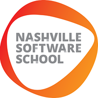

Full Time Data Analytics 9 | Demo Day - April 28, 2023
Full Time Data Analytics 9 | April 28, 2023
Demo Day - April 28, 2023
Data Analysts
Technologies
Thanks
The Data Analysts
Nashville Software School Full Time Data Analytics Cohort 9
Come see us demo on April 28, 2023!
Technologies